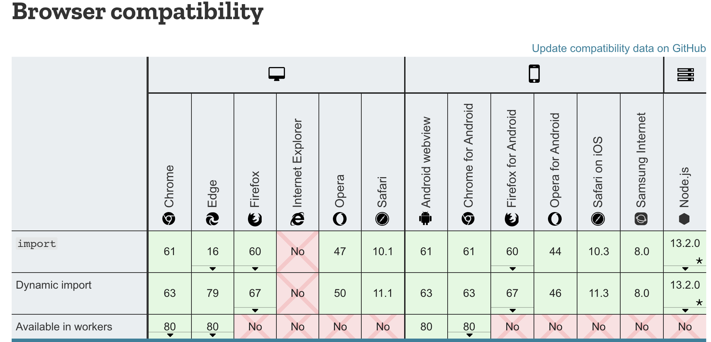
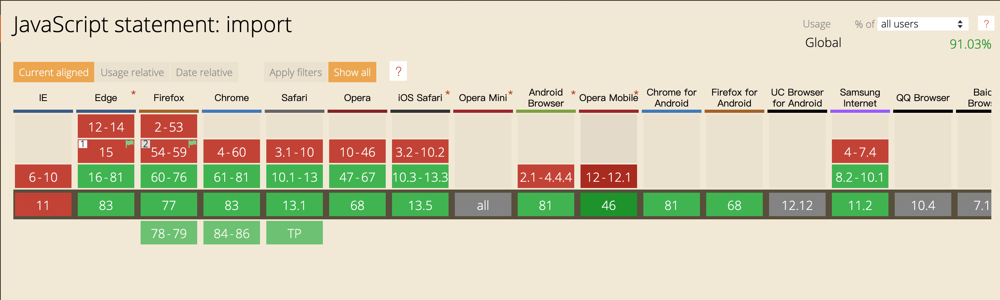

使用
1 | npm install snowpack -D |
- 使用create-snowpack-app可以快速的创建一个初始应用，并且配置好了基础设置
install命令
把所有对node_modules的依赖，找到支持module的包，复制对应的文件到web_modules目录下，引用改包的地方就会被修改成
1
2
3
4
5
6// Your Code:
import * as React from "react";
import * as ReactDOM from "react-dom";
// Build Output:
import * as React from "/web_modules/react.js";
import * as ReactDOM from "/web_modules/react-dom.js";怎么判断一个包是否支持es module，是从package.json中找，查找顺序是
1
depManifest['browser:module'] || depManifest.module || depManifest['main:esnext'] || depManifest.browser
所有文件会过一遍rollup打包，最终的文件是es module模式的，rollup打包时，使用了以下插件
1
2
3
4
5import rollupPluginAlias from '@rollup/plugin-alias';
import rollupPluginCommonjs from '@rollup/plugin-commonjs';
import rollupPluginJson from '@rollup/plugin-json';
import rollupPluginNodeResolve from '@rollup/plugin-node-resolve';
import rollupPluginReplace from '@rollup/plugin-replace';- plugin-alias的作用是用来支撑config中的alias配置
- plugin-commons，把CommonJS格式的包转成es module，rollup才能识别处理
- plugin-josn,把json文件转成es module
- plugin-node-resolve。应用node查找包的算法，主要是处理引用node_module中的包的情况
- plugin-replace的作用是替换例如
process.env.NODE_ENV等变量
build命令
- 会先执行install
- 会默认添加两个scripts，’mount:web_modules’（把.cache中的build中的内容mount到最终的build目录）， ‘build: js,jsx,ts,tsx’,
1
2
3
4
5
6
7
8
9
10
11
12
13
14
15
16
17{
id: 'mount:web_modules',
type: 'mount',
match: [ 'web_modules' ],
cmd: 'mount $WEB_MODULES --to /web_modules',
args: {
fromDisk: '/Users/xx//node_modules/.cache/snowpack/build',
toUrl: '/web_modules'
}
},
{
id: 'build:js,jsx,ts,tsx',
type: 'build',
match: [ 'js', 'jsx', 'ts', 'tsx' ],
cmd: '(default) esbuild',
plugin: { build: [AsyncFunction: build] }
}
dev命令
- 会判断是否需要install，如果需要会执行
createServer，在server的相应端，会执行各种逻辑，返回各种静态资源，会优先返回cache中的资源
1
2
3
4
5
6
7
8
9
10
11
12
13
14
15
16
17
18
19
20
21
22
23
24
25
26const server = createServer(async (req, res) => {
...
const [fileLoc, selectedWorker] = await getFileFromUrl(reqPath);
// 1. Check the hot build cache. If it's already found, then just serve it.
let hotCachedResponse: string | Buffer | undefined = inMemoryBuildCache.get(fileLoc);
if (!hotCachedResponse) {
// 2. Load the file from disk. We'll need it to check the cold cache or build from scratch.
fileContents = await fs.readFile(fileLoc, getEncodingType(requestedFileExt));
// 3. Check the persistent cache. If found, serve it via a "trust-but-verify" strategy.
// Build it after sending, and if it no longer matches then assume the entire cache is suspect.
// In that case, clear the persistent cache and then force a live-reload of the page.
if (cache) {
sendFile()
const checkFinalBuildAnyway = await buildFile(
fileContents,
fileLoc,
reqPath,
fileBuilder,
);
return
}
// 4. Final option: build the file, serve it, and cache it.
finalBuild = await buildFile(fileContents, fileLoc, reqPath, fileBuilder);
const wrappedResponse = await wrapResponse(finalBuild.result, finalBuild.resources?.css);
sendFile(req, res, wrappedResponse, responseFileExt);
}所以dev命令执行的时候很快，server会立马起来，打开浏览器，等浏览器访问对应资源的时候，再进行build。
HMR
chokidar watch所有文件，add，change，unlink事件就会触发事件，通过WebSocket传递给client
1
2
3
4
5
6
7
8
9
10
11
12const watcher = chokidar.watch(
mountedDirectories.map(([dirDisk]) => dirDisk),
{
ignored: config.exclude,
persistent: true,
ignoreInitial: true,
disableGlobbing: false,
},
);
watcher.on('add', (fileLoc) => onWatchEvent(fileLoc));
watcher.on('change', (fileLoc) => onWatchEvent(fileLoc));
watcher.on('unlink', (fileLoc) => onWatchEvent(fileLoc));需要自己手动加入如下代码
1
2
3
4
5
6if (import.meta.hot) {
import.meta.hot.accept();
import.meta.hot.dispose(() => {
app.unmount();
});
}针对change事件，不刷新页面实现更新。其原理是client端得到消息需要更新时，会重新import需要更新的资源，并且带上时间戳。server端就会把里面的依赖import资源都带上时间戳，从而实现刷新。
css的打包
直接引入css
对于css文件，使用proxy的模式加载，如在源代码中这么使用
1
import './a.css'
最终a.css会被buidl为a.css.proxy.js，其内容是
1
2
3
4
5
6
7
8
9
10
11
12
13
14
15
16
17
const code = "div {\n background-color: red;\n}";
const styleEl = document.createElement("style");
const codeEl = document.createTextNode(code);
styleEl.type = 'text/css';
styleEl.appendChild(codeEl);
document.head.appendChild(styleEl);
// 下面的代码只有在开启了hmr时才会注入
import * as __SNOWPACK_HMR_API__ from '/__snowpack__/hmr.js';
import.meta.hot = __SNOWPACK_HMR_API__.createHotContext(import.meta.url);
import.meta.hot.accept();
import.meta.hot.dispose(() => {
document.head.removeChild(styleEl);
});
使用css module
- 必须以.module.css结尾，会被css-modules-loader-core这个包处理一遍
1
2
3
4
5
6
7
8
9
10import Core from 'css-modules-loader-core';
let core = new Core();
const {injectableSource, exportTokens} = await core.load(code, url, () => {
throw new Error('Imports in CSS Modules are not yet supported.');
});
return `
export let code = ${JSON.stringify(injectableSource)};
let json = ${JSON.stringify(exportTokens)};
export default json;
`
支持jsx,ts
- 使用esbuild这个包实现对这俩语法的支持，默认支队.ts，.jsx后缀的文件进行处理
esm的支持情况
- 除了ie，如果对兼容性要求不要的场景，在pc端可以开始尝试使用了


参考文档
https://zhuanlan.zhihu.com/p/144993158
https://developer.mozilla.org/en-US/docs/Web/JavaScript/Reference/Statements/import
https://www.caniuse.com/#search=import